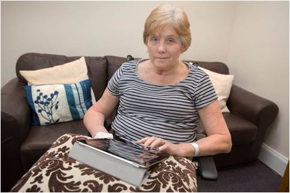
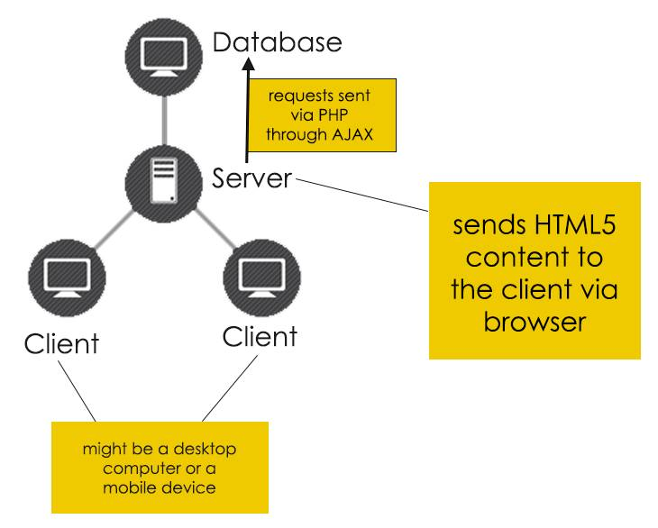

Project Proposal
Personas
Persona 1:
Jody - Alzheimer’s patient
Profession: Retired accountant
Location: Brossard, QC
Age: 74
Home life: Lives alone with a caregiver, visited by children & grand-children every 3 days
Hobbies: Knitting, reading books
Personality: Silent, giving
Profile: Jody used to be really good with numbers when she was young, she was an accountant. She has been suffering from Alzheimer’s disease for the past 6 years. She has been looking into ways of improving her short term memory because she even forgets her conversations with her grandchildren.
Goal: She wants to improve her memory because she doesn’t want to give up her hobby of knitting and she wants to have better relationship with her younger relatives.
Experience with gaming & internet: Novice
Persona 2:
Robert - Alcoholic & drug user
Profession: Businessman
Location: Toronto, ON
Age: 44
Home life: Married, has 2 kids.
Hobbies: Playing hockey, going out with friends
Personality: Cheerful, friendly
Profile: Rob is an alcoholic who sometimes does drugs while drinking with friends. He loves his family and his job, but he couldn’t find a cure for his alcoholism. Recently, it has come to his attention that he has been forgetting what he said within a week. This has been affecting his daily and business life great deal, so he has already consulted his doctor as he seeks advice to quit alcohol and he wants find a relief for his short term memory loss.
Goal: Find a relief for his short term memory loss so that he won’t have difficulty continuing his career as a businessman.
Experience with gaming & internet: Intermediate
Persona 3:
Laurent - Suffers from concussion
Profession: Student
Location: Montreal, QC
Age: 22
Home life: Lives with 2 room mate, has a girlfriend
Hobbies: Playing football, strength training
Personality: Focused, goal-oriented
Profile: Laurent was the captain of McGill’s football team. He has been playing football for 10 years. After last year’s national playoffs during which he had several head injuries, he has experienced some short term memory loss and he had hardships focusing on anything for more than 20 minutes. His doctors diagnosed him with concussions, and he immediately took a break from his varsity career.
Goal: Laurent wants to be able to focus on his studies and improve his short term memory so he can be both a great student and an athlete again.
Experience with gaming & internet: Advanced
Persona 4:
Annie - Suffering from a stroke
Profession: Government Officer
Location: Laval, QC
Age: 59
Home life: Lives with her husband, has 2 kids.
Hobbies: Spending time on social media, playing games
Personality: Organized, outgoing
Profile: Annie is a government officer and she loves to work despite her old age. One morning, before work, she was having breakfast with her husband; she dropped her tea and fell on the floor. Her husband called the ambulance suspecting she just had a stroke. He was right. Annie has been trying to recover since past 6 months.
Goal: Annie wants to recover from stroke, get back on her feet again, of course with her memory. She wants to remember the good days, and every other day from now on.
Experience with gaming & internet: Intermediate
Use Cases
Use Case 1:
Name: Create AccountDescription: User would like to use this site, and therefore needs to create an account to do so.
Actors: User
Pre-Conditions:
The user is not logged in.
Flow of Events:
Basic Flow
- User navigates to the product page
- User then selects the create account button
- Once the new screen has loaded, the user will enter all required information.
- The user then selects to create the account
- The system validates the information entered by the user.
- All information that was entered for the user is now stored for future use.
Alternate Flow(s)
User cancels account request
If the user decides to cancel the creation of the account, the information that was entered is then forgotten and cleared, and the user is returned to the sign in page of the game.
User does not enter valid information
- The user enters his information into the create account form
- The user selects to create his new account
- The system will attempt to validate the information that was input
- Once the system comes across an error in validation, it will alert the user that something is incorrect, and ask them to correct the information in the incorrect field.
Post-Conditions:
Basic Flow - The user is logged in
Alternate Flow
User Cancels - The user is not logged in as is sent back to the sign in page. The user is not signed in.
Invalid Information - The user is asked to re-enter valid information on create account screen. The user is not signed in.
Use Case 2:
Name: LoginDescription: User would like to use this site, and therefore needs to login to their account to do so.
Actors: User, Administrator
Pre-Conditions:
The user is not logged in.
Flow of Events:
Basic Flow
- User navigates to the product page
- User then selects the sign in button
- Once the new screen has loaded, the user will enter all required information.
- The user then selects to sign in
- The system validates the information entered by the user.
Alternate Flow(s)
User does not enter valid information
- The user enters his information into the sign in form
- The user selects to sign in
- The system will attempt to validate the information that was input
- Once the system comes across an error in validation, it will alert the user that something is incorrect, and ask them to correct the information in the incorrect field.
Post-Conditions:
Basic Flow - The user is logged in
Alternate Flow
Invalid Information - The user is asked to re-enter valid information on sign in screen. The user is not signed in.
Use Case 3:
Name: Play GameDescription: User would like to start playing the game.
Actors: User
Pre-Conditions:
The user is logged in.
Flow of Events:
Basic Flow
- User selects the "go" button
- As the screens come up, the user must observe what is on the screen
- After a certain amount of time, the screen switches to a question about the previous image.
- The user must then answer the question with the a response
- The system will let the user know if the answer was correct or not
- The system will record whether the answer was correct or not
- The user then moves onto the next image.
Alternate Flow(s)
None
Post-Conditions:
Basic Flow - The user continues playing the game
Use Case 4:
Name: Quit GameDescription: User would like to stop playing the game.
Actors: User
Pre-Conditions:
The user is in the middle of playing the game.
Flow of Events:
Basic Flow
- User selects the "end game" button
- System keeps track of the status of the current level (not started or completed)
Alternate Flow(s)
None
Post-Conditions:
Basic Flow - The user returns to the home page
Use Case 5:
Name: View StatisticsDescription: User would like to view their statistics.
Actors: User
Pre-Conditions:
The user is at the home page.
Flow of Events:
Basic Flow
- User selects the "view stats" button
- System loads a graph of the number of correct responses per game over time
Alternate Flow(s)
None
Post-Conditions:
Basic Flow - The user is able to view their progress and improvements since the first time they played the game
Use Case 6:
Name: Log OutDescription: User would like to log out of their session.
Actors: User, Administrator
Pre-Conditions:
The user is at the home page.
Flow of Events:
Basic Flow
- User selects the "log out" button
- System saves all data for the user
Alternate Flow(s)
User closes the browser
-User is prompted to make sure they want to end their session
-If the user confirms they want to leave, all unsaved data is saved.
-If the user says that they do not want to leave, session stays open.
Post-Conditions:
Basic Flow - The user is logged out. Sign in page is loaded to screen.
Alternate Flow
Closes browser - If user wants to leave, browser is closed. If user does not want to leave, user is returned to the homepage.
Related Products
Lumosity
Lumosity is a web application created for anyone to use. It is made as a brain training tool to strengthen an already present short term memory. This game takes the user through several levels all while keeping track of the user’s progress in all cognitive sections. This application also allows users to view their progress as well as see the areas in which their short term memory is best and where it needs improvements.
Brain Metrix
Brain Metrix is a website which contains multiple types of brain training games. The variety of games on this site is much greater and are much more fun to play than on most brain training programs.Unfortunately this site does not contain any tracking system, nor does it allow you to have a record of which games you have already completed.
Games for the Brain:
Games for the Brain is a website, similar to Brain Matrix, which contains several games meant to improve the users short term memory. It does not have any progress or game completion tracking; however it does have games in over 10 different languages. This is a very useful thing to have, because the users short term memory could be challenged with both the game and the language if they are playing a game in a language which is not their mother tongue.
Product Comparison
AceMemo’s approach to memory loss recovery is different, because other than regular memory improvement applications it focuses on:
1. Social: We believe socializing is big part of improving memory because social interactions helps avoid depression and stress that may cause memory loss. We let users interact with their loved ones via social media and even give them social challenges on a daily basis.
2. Organization skills: Throughout the app, we encourage our users to become organized with small incentives. We try to encourage the usage of the application as a routine by notifying them on a daily basis. Studies have shown that routines might avoid confusion for a person who is trying to recover from memory losses.
3. Challenge the brain on different levels: We challenge the human brain on many different levels: both visually and vocally. Different from similar solutions, we make use of many research projects that show audio can be used in memory recovery.
A large difference between AceMemo and other, already existing, brain training games, is that our product is specifically geared towards users with short term memory issues. This being said, the levels and tasks that the users will have to complete in AceMemo will be easier and much more trivial than the levels in other games. The main reason for this is because a level which may seem easy to complete for someone with a good memory, will be extremely difficult for someone with short term memory issues. AceMemo’s main purpose is to help reinstate and rehabilitate a person’s short term memory; once they are able to complete all of AceMemo’s levels, a user can move onto other, more difficult brain training games.
High Level Design
We will use a free HTML5 web engine like Lime.JS and we will use a client-server architecture throughout the software. Everything will be stored on the server and the client will request the webpage to start using the application.
User information will be stored in a MySQL database and for server side operations, we will use PHP via AJAX requests.
We will use Facebook and Twitter APIs to help users socialize via the application.
For the reasons of prototyping, we are planning to take advantage of many frameworks as possible to save time on development and spend that time to focus on our users early.
In the end, we are planning to have a web application with a responsive design that can be viewed in desktop browsers as well as mobile browsers.
Feasibility Justification
Once we assemble and experiment with several HTML5 game engines, we will choose one framework and start the development process based on the initial user information we have gathered. Then we will set up a server and database to store information.
We will use the model-driven software engineering approach. Once we build our models, we will design the architecture and then start implementing it.
We will divide the work between team members into two: Back-end (PHP & server communications) + front-end (HTML5 + CSS/graphics + JavaScript). All our team members have some sort of background in software development, so we will collaborate
We will look into implementing several auto-tracking services to track user behavior - like Google Analytics and heatmaps. Our testing will be based on this tracking service and direct user behavior observation.
We will start testing with the users when we finish implementing our first feature and observe users’ behavior to provide better functionality and user experience. We will ask users and their families the impact our software had on their short term memory and we will test them using our software on a regular basis. Specifically, we will also make use of A/B testing.
We will continue development concurrently and will continue testing on each feature release and get feedback from our users. We will go into final user testing phase once we have completed all the features which is an exhaustive test of all features.
Summary of Contributions
Personas: Emir
Use Cases: Alison
Related Products: Alison
Product Comparison: Emir & Alison
High Level Design: Emir
Feasibility Justification: Emir
Publishing Everything to the Web: Alison